Ubuntu18.04+Linux4.14.47_User’s Compilation Manual_V1.0
Document classification: □ Top secret □ Secret □ Internal information ■ Open
Copyright
The copyright of this manual belongs to Baoding Folinx Embedded Technology Co., Ltd. Without the written permission of our company, no organizations or individuals have the right to copy, distribute, or reproduce any part of this manual in any form, and violators will be held legally responsible.
Forlinx adheres to copyrights of all graphics and texts used in all publications in original or license-free forms.
The drivers and utilities used for the components are subject to the copyrights of the respective manufacturers. The license conditions of the respective manufacturer are to be adhered to. Related license expenses for the operating system and applications should be calculated/declared separately by the related party or its representatives.
Revision History
Date |
User Manual Version |
Revision History |
|---|---|---|
2022/02/10 |
V1.0 |
OK1046A-C2_User’s Compilation Manual Initial Version |
Overview
This manual is designed to enable you to quickly understand the compilation process of the products and familiarize yourselves with the compilation methods of Forlinx products. The application needs to be cross-compiled on an ubuntu host before it can run on the development board. By following the methods provided in the compilation manual and performing practical operations, users will be able to successfully compile their own software code.
The manual will provide instructions for setting up the environment but there may be some unforeseen issues during the environment setup process. For beginners, it is recommended to use the pre-configured development environment provided by us. This will allow you to quickly get started and reduce development time.
Linux systems are typically installed in three ways: dual system on a real machine, single system on a real machine, and virtual machine. Different installation methods have their advantages and disadvantages. This manual only provides methods to build ubuntu in a virtual machine. Hardware Requirements: It is recommended to have at least8GB memory or above.It allows for allocating a sufficient memory to the virtual machine (recommended to allocate2GBor above), while still leaving enough resources for other operations onWindows. Insufficient memory allocation may result in slower performance onWindows.
The manual is mainly divided into four chapters:
Chapter 1. is mainly about the installation of VMware, and the version used is VMware Workstation 15 Pro15.1.0. You need to install VMware before using the ubuntu development environment;
Chapter 2. mainly introduces the method of loading the ubuntu development environment provided by Forlinx, and the development environment is 64-bit ubuntu18;
Chapter 3. mainly introduces the method of building a new ubuntu development environment; It takes 64-bit Ubuntu 18.04 as an example to describe the creation process of Ubuntu. Due to different computer configurations, unexpected problems may arise during the setup process. It is recommended for beginners to use the environment that we have set up directly.
Chapter 4. mainly describes the compiling method of the source code related to the development board, including the kernel source code compilation and the application program compilation.
A description of some of the symbols and formats associated with this manual:
Format |
Meaning |
|---|---|
Blue font on grey background |
Refers to commands entered at the command line (Manual input required). |
Black font on gray background |
Serial port output message after entering a command |
Bold black on gray background |
Key information in the serial port output message |
// |
Interpretation of input instructions or output information |
Username@Hostname |
root @ localhost: ~ : development board serial port login account information; |
Example: View the files that exist in the current path.
forlinx@ubuntu:~/work$ ls
OK10xx-linux-fs.tar.bz2 //Source code package
forlinx@ubuntu~/work$：User name: forlinx，host name: ubuntu, means to operate in the development environment Ubuntu.
// : Explanation of operating instructions, no need to enter
ls：Blue font with gray background, indicating relevant commands requiring manual input
OK10xx-linux-fs.tar.bz2：The black font with gray background is the output information after the input command, and the bold font is the key information. Here is the source code package.
1. VMware Virtual Machine Software Installation
This chapter mainly introduces the installation of VMware virtual machine, and takes VMware workstation 15 Pro v15.1.0 as an example to show the installation and configuration process of the operating system.
1.1 VMware Software Download and Purchase
Go to the VMware website https://www.vmware.com/cn.html to download Workstation Pro and get the product key. VMware is a paid software that requires purchasing, or you can choose to use a trial version.
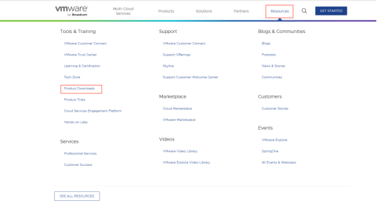
After the download is complete, double-click the startup file to start the installer.
1.2 VMware Software Installation
Double-click the startup program to enter the installation wizard.
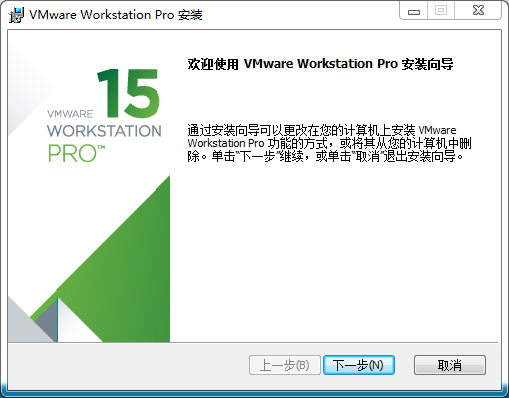
Click “Next”.
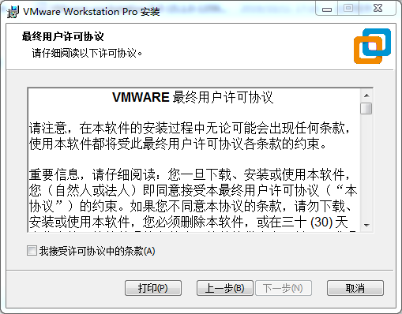
Check I accept the terms in the license agreement and click “Next”.
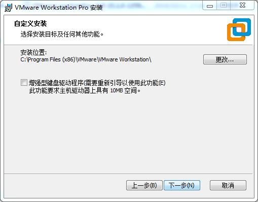
Modify the installation location to the partition of your computer where the software is installed, and click “Next”.
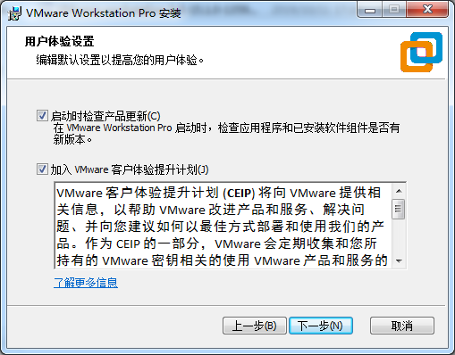
Check and click “Next”.

Check Add Shortcut and click “Next”.
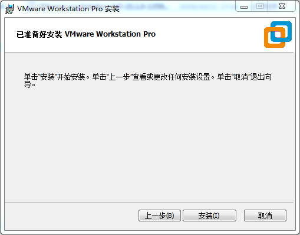
Click “Installation”.
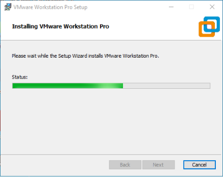
Wait for the installation to complete.

Click “Finish” to try it out. If users need to use it for a long time, they need to buy it from the official and fill in the license.
2. Loading the Existing Ubuntu Development Environment
Note:
It is recommended that beginners use the virtual machine environment built by Forlinx directly. After understanding this chapter, you can directly jump to the compilation chapter for further study;
The account that provides the development environment is: for Linux and the password is: forlinx.
There are two ways to use a virtual machine environment under VMware. One is to directly load an existing environment, and the other is to create a new environment. Let’s first talk about how to load an existing environment.
First, download the development environment provided by Forlinx. After downloading, select the Ubuntu 18 compressed package and right click to extract it to the OK1043&OK1046&OK1012-Linux4.14.47-VM 15_1_0-ubuntu18_04 folder:

After the decompression is completed, as shown in the figure below:

Ubuntu18.vmx in the ubuntu18 folder is the file to be clocked by the virtual machine.
Open the installed virtual machine.

Select the directory where the newly extracted ubuntu18 virtual machine file is located, select ubuntu18.vmx, and click “Open”.

After loading, click to open the virtual machine to run and enter the system interface.

When the development environment is loaded for the first time, the following will appear. Select “I have copied this virtual machine (P)”, and the system will automatically load it.
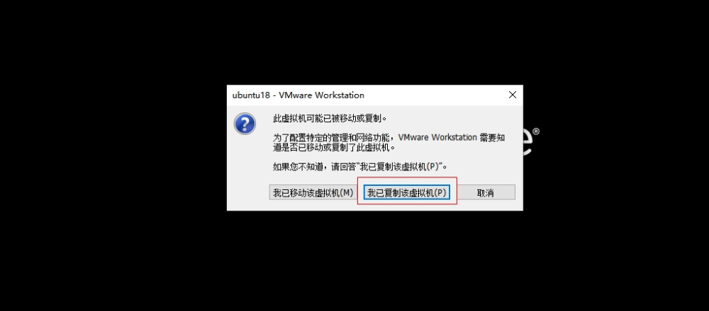
After loading, you will enter the following interface, enter the password: forlinx, and select “Sign in” to log in after filling in the password.

Password: forlinx.
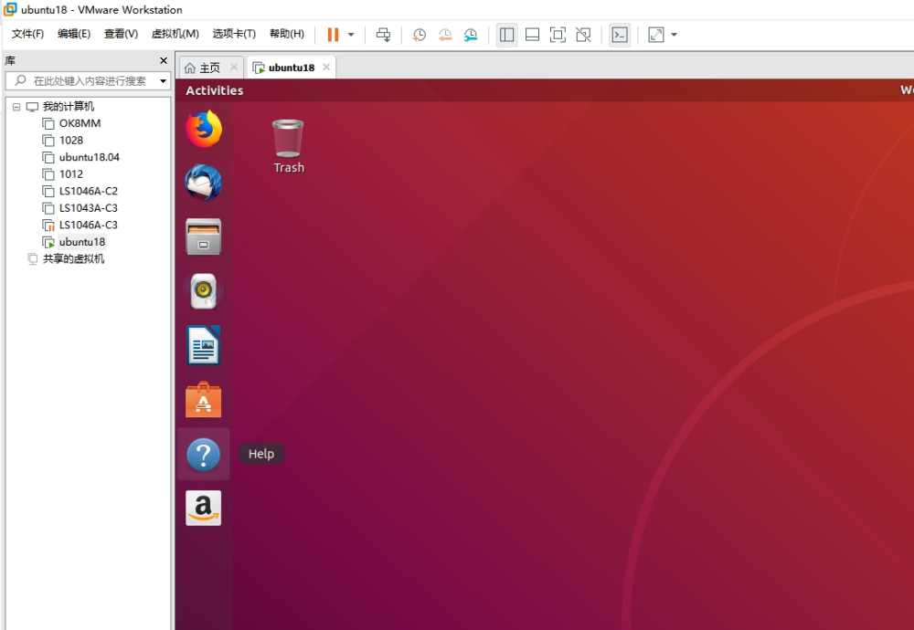
3. New Ubuntu Development Environment Setup
Note:
Beginners are not recommended to set up a system on their own. It is recommended to use an existing virtual machine environment. If you do not need to set up the environment, you can skip this section;
This chapter focuses on the process of creating the Ubuntu system and does not cover the setting up of the compilation environment. The main reason for this is that in order to build a compilable source code environment, one needs to download the official source code of NXP in Ubuntu 18.04. Setting up Ubuntu compilation can be complex and prone to compilation problems.
3.1 Ubuntu System Setup
3.1.1 Ubuntu Virtual Machine Setup
Open the VMware software, click on create a new virtual machine. Enter the following interface:

Choose custom, and click “Next”.

Select the compatibility with the corresponding version of VMware, which can be found in Help->About VMware Workstation, and click “Next”.
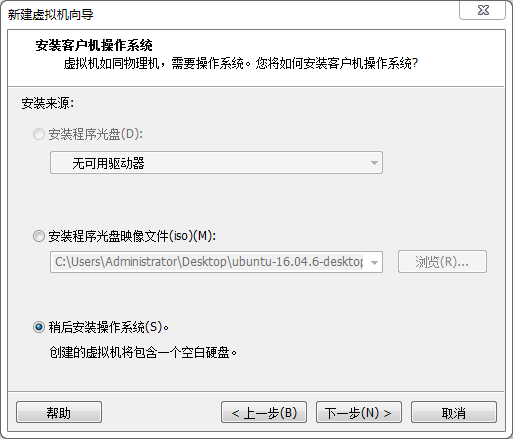
Select Install the operating system later and click “Next”.

Leave the default and click “Next”.
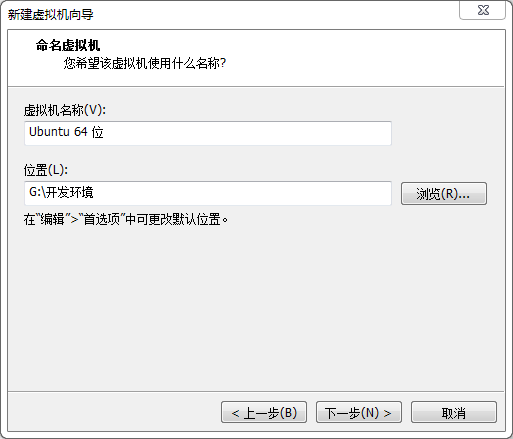
Modify the virtual machine name and installation location, click “Next”.
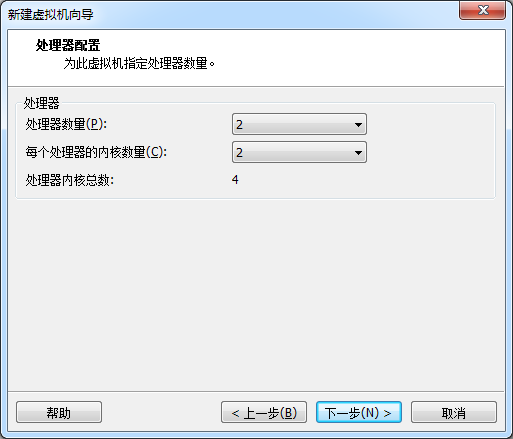

Again, set the memory size as appropriate.
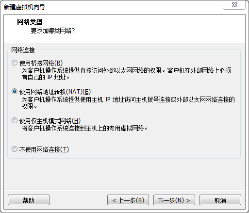
Set the network type, the default is NAT mode, click Next. Keep the default values for the remaining steps until you reach the step to specify the disk capacity.

The default selection for the IO controller type here is LSI.

The default selection here is also SCSI.

Choose to create a new virtual disk here.
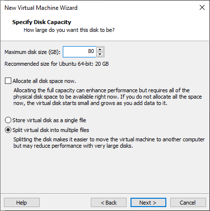
Set the disk size to 200 gigabytes and select the form in which the disk exists, then click “Next” to finish.
Specify the disk file, the default one here is fine.

Click “Finish” by default.
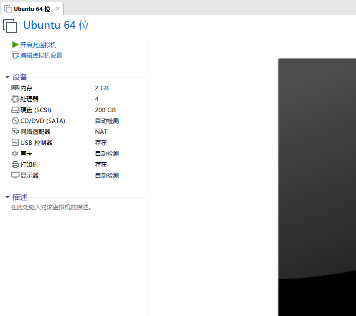
The virtual machine creation is now complete.
In the next section, the installation of Ubuntu system in the virtual machine is introduced, which is similar to the installation method in the real machine. Here we describe the method of installing Ubuntu system in a virtual machine.
3.1.2 System Installation
The Ubuntu version chosen to install is 18.04. First, go to the Ubuntu official website to get the Ubuntu 18.04 64-bit image. Go to http://releases.ubuntu.com/18.04/ to downlaod “ubuntu-18.04.5-desktop-amd64.iso.
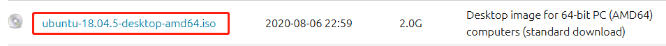
Right-click the newly created Ubuntu 64-bit and select Settings from the pop-up menu:
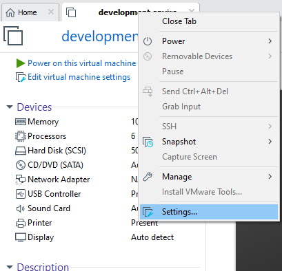
The “Virtual Machine Settings Menu” pops up as shown below:：

Click on CD/DVD (SATA), select “Use ISO image file,” browse and choose the previously downloaded Ubuntu image, then click “OK” to confirm.
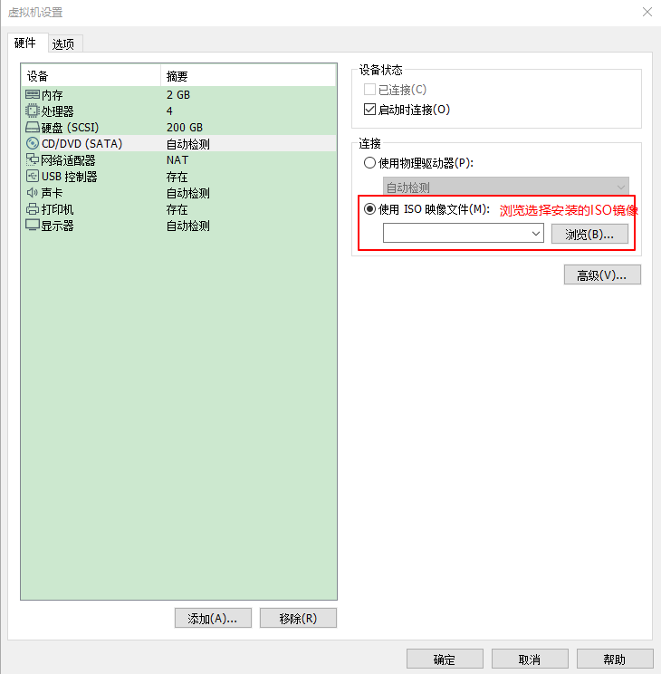
After setting up the image, ensure that the network is available. Then, start the virtual machine and proceed with the installation of the Ubuntu image.
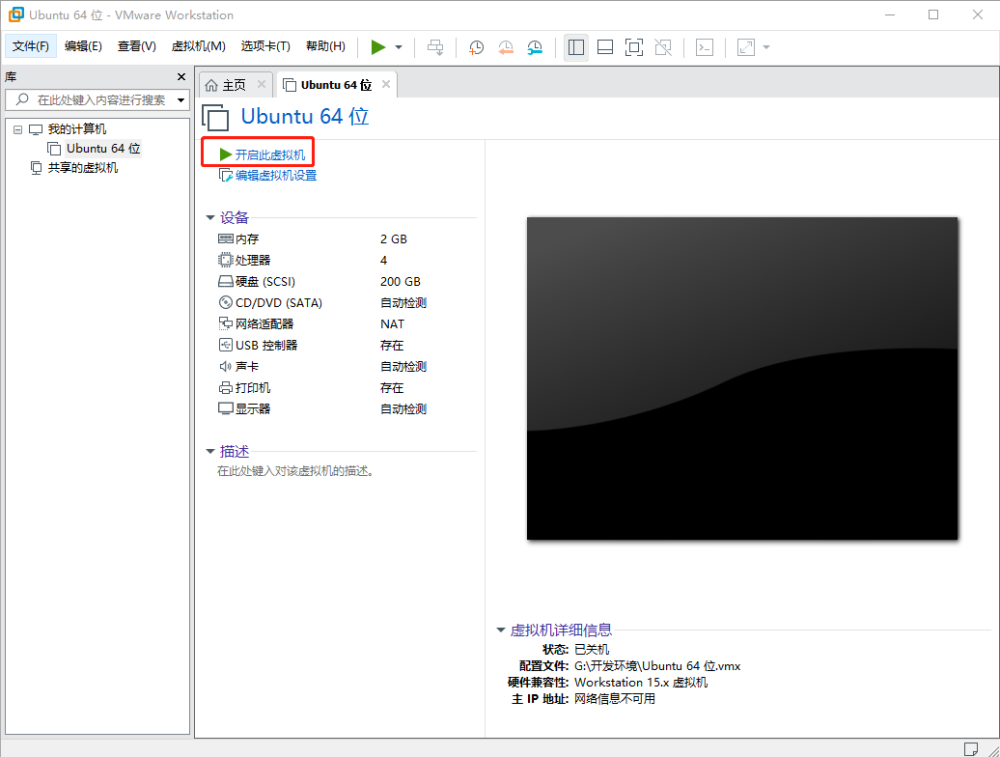
After starting the virtual machine, wait for the installation interface to appear as shown below.
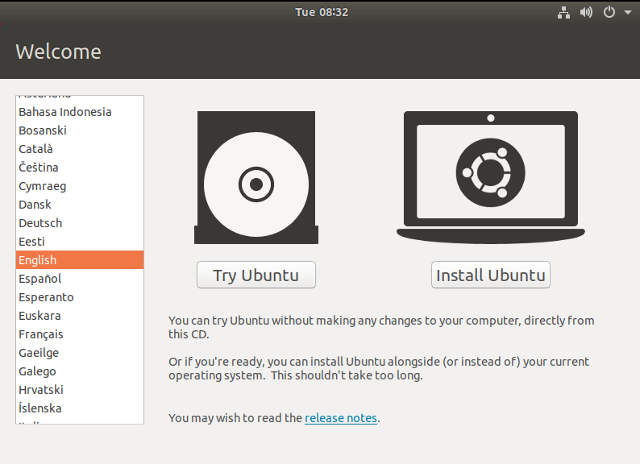
After selecting the language on the left side as shown in the image, click “Install Ubuntu”, and the language selection interface will pop up. Ubuntu default language is English, of course, you can also choose others, the default choice of language in the later stage can also be reset,after selection then click continue.

Next, by default, select continue to finish the installation, the installation process will be very slow, then click “continue”:
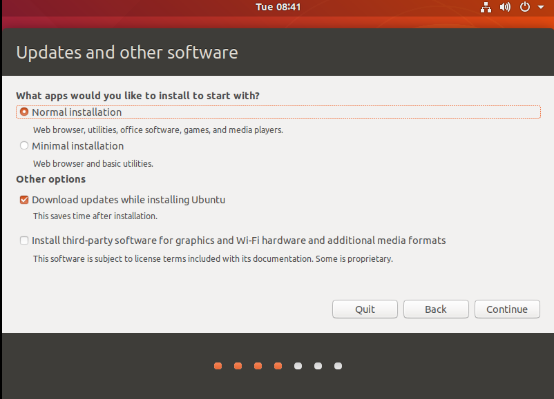
Next, select continue by default to continue the installation, the installation process will be very slow, and then click “continue”:
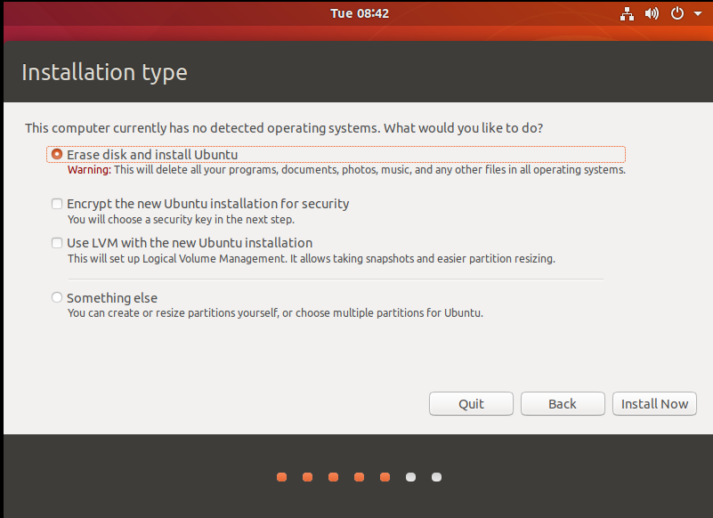
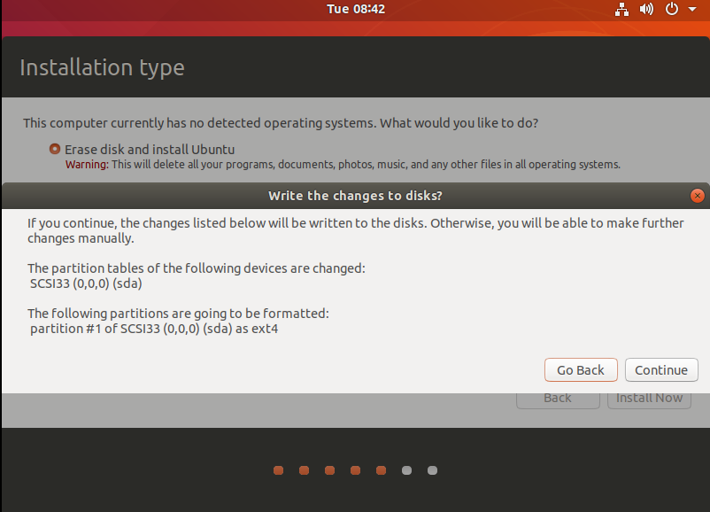
Next, select the timezone. You can either click on the Shanghai timezone or enter “Shanghai” (or choose the appropriate timezone based on your location). Then, click “Continue” to proceed. Finally, set the user name and password (take the user name: forlinx, password: forlinx as an example, the user can set it according to actual needs), and click “continue” to automatically install:

The installation process is shown in the figure below, you can skip it if the network is bad, it will not affect the installation.
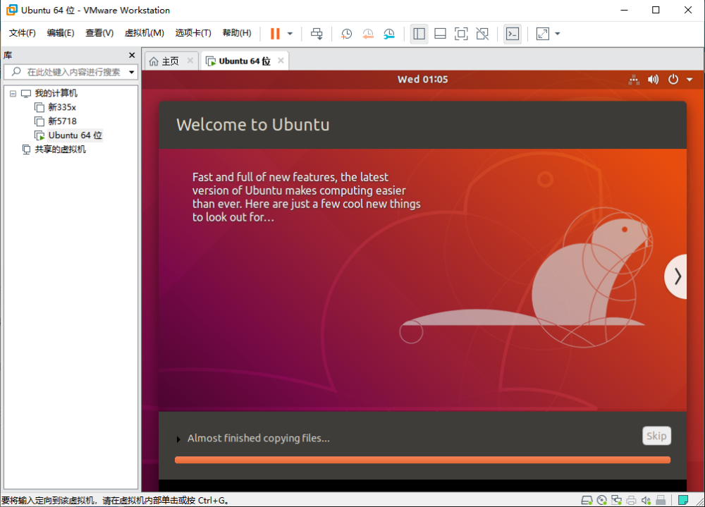
After the installation, click “Restart Now” to reboot (or click “Reboot Client”):
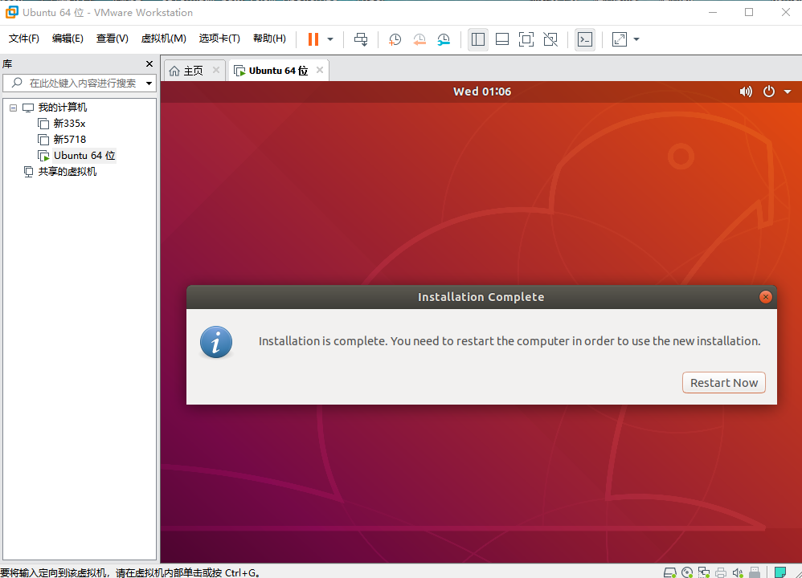

After the restart, you need to use the user name and password to log in. The system interface after login is as shown below:


Above, the Ubuntu system installation is completed by the following figure configuration, click “OK”, and then re-open the virtual machine to see if you can start Ubuntu normally.
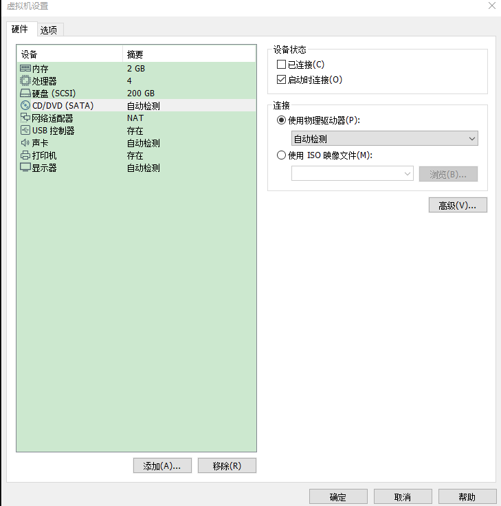
3.1.3 Basic Ubuntu Installation
After installing the Ubuntu 18.04 operating system, there are a few configurations to make.
VMware Tools Installation:
Next, install VMware Tools. Without installing this tool, you won’t be able to copy and paste and drag file between the Windows host and the virtual machine. First click on “Virtual Machines” on the VMware navigation bar, then click “Install VMware Tools” in the drop-down box.
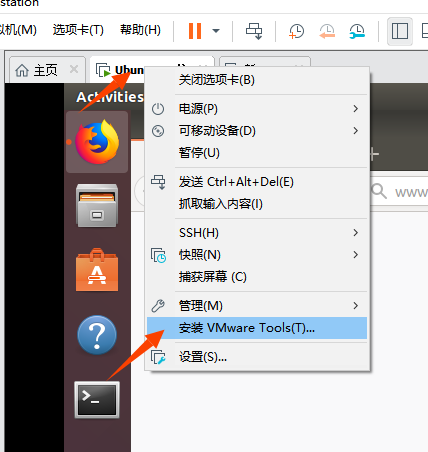
Once done, enter Ubuntu and the VMware Tools CD icon will appear on your desktop, click into it:
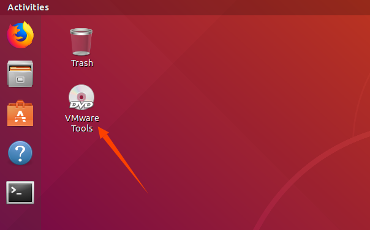
Double-click on the VMwareTools icon, go to it and see a zip file VMwareTools-10.3.10-12406962.tar.gz (it may be different for different VM versions).

Copy the file under the home directory (i.e., the directory of the home personal username):
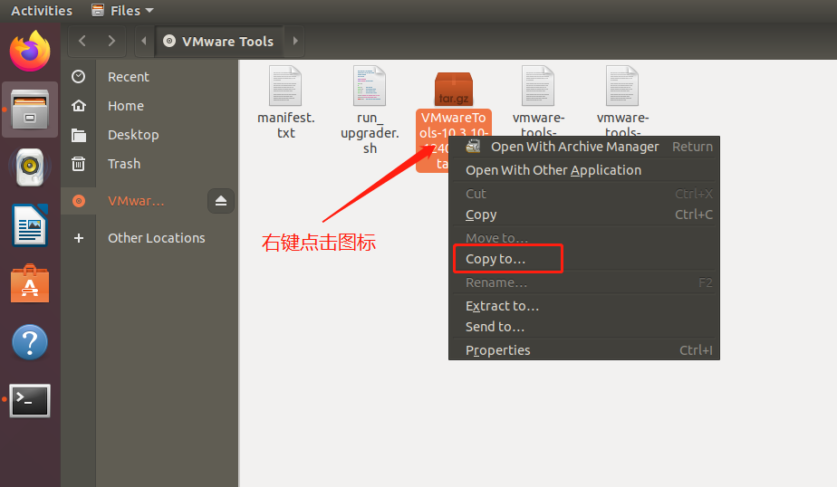
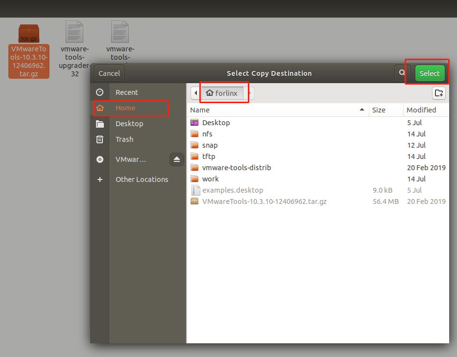
Press [Ctrl+Alt+T] to bring up the terminal command interface, and use the tar command to decompress the VMware tools installation package (using the sudo command will prompt for the password, according to the prompts directly enter the password enter can be used, Linux system password input does not show):
forlinx@ubuntu:~$ sudo tar xvf VMwareTools-10.3.10-12406962.tar.gz
[sudo] password for forlinx:
After executing the extract command, use ls to view the file directory vmware-tools-distrib, and go to the directory.
forlinx@ubuntu:~$ ls
Desktop examples.desktop nfs snap tftp VMwareTools-10.3.10-12406962.tar.gz vmware-tools-distrib work
forlinx@ubuntu:~$ cd vmware-tools-distrib/ //Use the CD command to enter the directory
forlinx@ubuntu:~/vmware-tools-distrib$ ls //View the files in this directory
bin caf doc etc FILES INSTALL installer lib vgauth vmware-install.pl
In the current directory, enter sudo ./vmware-install.pl to install, enter the password after pressing Enter, and then start the installation. When you encounter yes, enter yes, and press Enter for the rest to install by default.
forlinx@ubuntu:~/vmware-tools-distrib$ sudo ./vmware-install.pl
[sudo] password for forlinx: //Enter the password of the forlinx account, no display, cannot see the input content
The installation process information is long, here omitted.
open-vm-tools packages are available from the OS vendor and VMware recommends
using open-vm-tools packages. See http://kb.vmware.com/kb/2073803 for more
information.
Do you still want to proceed with this installation? [no] yes //Enter yes
... ...
After completing the VMware tools tool, you can achieve file copy and paste, virtual machine adaptive full display and other functions between Windows and Ubuntu. If the virtual machine cannot be displayed in full screen, enable Auto Resize by clicking View, then Auto Adapt to Client. Ensure that VMware tools have been installed successfully.

Basic Settings:
Make most of the system settings in the location shown below. A lot of the setup requirements on Ubuntu can be done here.

3.1.4 Ubuntu Network Settings
NAT Mode
Before using the network, make sure that our virtual machine can connect to the Internet, open the virtual machine settings, and change the network bridge mode in the network adapter to “NAT mode”:

When the VMware virtual NIC is set to NAT mode in a virtual machine, the network in the Ubuntu environment can be set to dynamic IP. The virtual NAT device and the host NIC are connected to communicate for Internet access in this mode. This is the most common way for our VMs to get on the extranet.
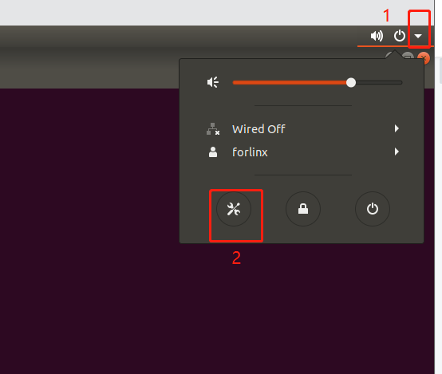

The network is set to dynamic IP.

Bridge Mode:
Note: The IP and DNS involved in the network settings section should be set according to the user’s own actual environment, the manual is an example.
If you use TFTP, SFTP and other servers, you need to set the virtual machine as the bridge mode. When the VMware virtual NIC is set to bridge mode, the host NIC and the VM NIC communicate via a virtual bridge, which requires the Ubuntu IP to be set to the same network segment as the host IP.


Set up static ip, at this time Ubuntu’s IP and the host IP need to be set in the same network segment.

3.1.5 U Disk Loading
Open VM Settings, USB Controller, select USB 3.0 in Compatibility and “OK”. As shown in the picture below, since most computers nowadays support USB3.0 ports, if we don’t set it up, when we plug in the USB3.0 port, we can’t connect to the virtual machine. As shown below:
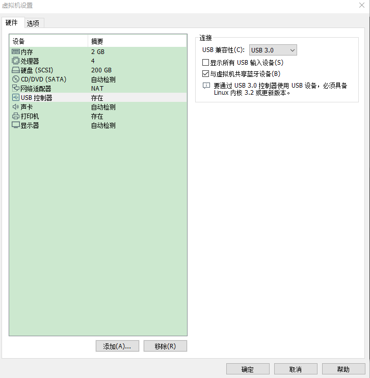
After the virtual machine boot, insert the U disk, the virtual machine will be more in the lower right corner of the icon similar to the “U disk”, right-click –> connect, and then you can see in the file system to see more than a directory, that the U disk loaded successfully, as shown in the figure:
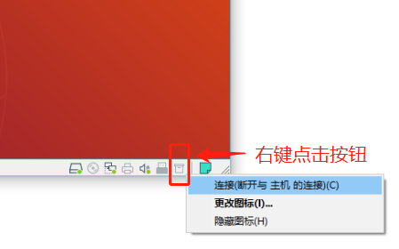
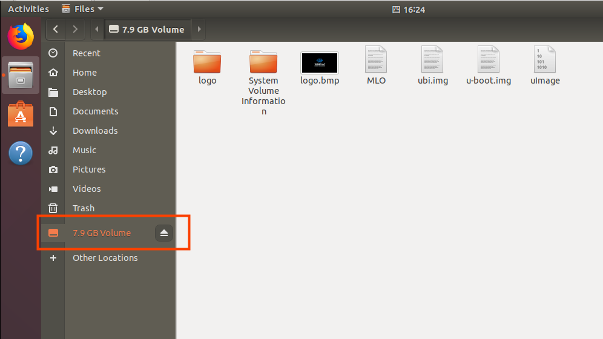
3.1.6 Required Library Installation
Before development, there are some other necessary libraries, we use the following commands to install them one by one, before installation, you need to ensure that the network can be used normally, you can get on the extranet:
forlinx@ubuntu:~$ sudo apt-get update // Update the download source information.
forlinx@ubuntu:~$ sudo apt-get install build-essential // Provide the list information of software packages necessary for compiling programs.
forlinx@ubuntu:~$ sudo apt-get install libncurses* // Used to generate text-based user interfaces.
forlinx@ubuntu:~$ sudo apt-get install lzop // A compression and decompression tool based on the Lzo library.
forlinx@ubuntu:~$ sudo apt-get install net-tools // Network configuration tools.
4. Related Code Compilation
flexbuild is the official compilation environment provided by NXP for the QorIQ LS series. Forlinx has customized and modified the official NXP version of flexbuild for the OK1046A-C2 platform, which is more suitable for users to develop quickly. flexbuild provides all the source code needed to compile the entire system, such as the Linux kernel, uboot, firmware, app program, and a complete file system. Users can directly use the provided file system. However, it is also possible to compile a new files ystem from scratch. It is important to note that building a file system from scratch may result in missing configurations when compared to the file system provided by Forlinx. Therefore, it is not recommended to do so.
Flexbuild defaults to supporting only Ubuntu 18, but it also supports Docker. Since most users are not familiar with Docker, it is strongly recommended that you use Forlinx’s provided Ubuntu 18 virtual machine for compiling and development.
Note: The virtual machine username is forlinx and the password is forlinx.
The compilation of OK1043A-C3 software image is divided into two parts. The first part is related to the first stage of startup, which mainly includes rcw, u-boot, network-related firmware and security-related firmware. The whole is compiled into a 16M firmware image. Chapter 2. Ubuntu File System
4.1 Preparation Before Compilation
4.1.1 Description of the Environment
OS: Ubuntu18.04 64-bit version
Cross-toolchain: aarch64-linux-gnu-gcc
Bootloader of Development board: u-boot 2018.03
Development Board Kernel: Linux-4.14. 47
SDK version: LSDK-18.06-V4.14.47
4.1.2 Source Code Copy
Source code package: user profile \ Linux \ source code \ OK10xx-Linux-fs. Tar
There are many kinds of file transfers between ubuntu and Windows hosts. After installing VMware Tools, you can set up a virtual machine shared folder to mount the file directory of the Windows host to ubuntu for file sharing. Two methods are described below, and the first is recommended.
Method 1: You can directly copy the source code to the virtual machine/home/forlinx/work/directory.
Method 2: Use the method of sharing files. The setting method is as follows. Click “Virtual Machine” in the menu bar and select “Settings”.
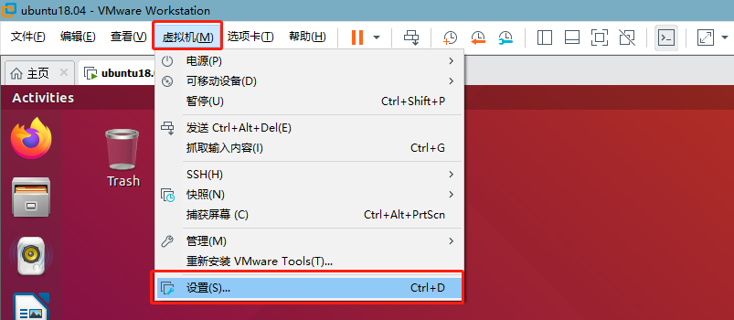
Click “Options”, enable “Shared Folder”, set the shared directory on the Windows host, and click “OK”.

After the virtual machine’s file sharing is set up, put the kernel source code OK10xx-linux-fs.tar.bz2 used for the test into the shared folder of the Windows host.
The shared folder is in the Ubuntu mount directory/mnt/hgfs/share. View the files in the mount directory.
forlinx@ubuntu:~$ ls /mnt/hgfs/share/
OK10xx-linux-fs.tar.bz2
Copy the source code from the shared folder to the Ubuntu/home/forlinx/work directory.
forlinx@ubuntu:~$ sudo cp -r /mnt/hgfs/share/OK10xx-linux-fs.tar.bz2 /home/forlinx/work/
[sudo] password for forlinx: // Enter the password. The password is “forlinx”, and there will be no echo when you type it.
forlinx@ubuntu:~$ cd /home/forlinx/work/
forlinx@ubuntu:~/work$ ls
OK10xx-linux-fs.tar.bz2 // File copied successfully.
Switch to the root account and extract the kernel source code copied to the /home/forlinx/work directory using the tar command to the kernel source path.
forlinx@ubuntu:~$ sudo -s // Switch to the root user identity.
[sudo] password for forlinx: // Enter the password “forlinx” as prompted and then press Enter.
root@ubuntu:~# cd work
root@ubuntu:~/work# ls
OK10xx-linux-fs.tar.bz2 // Kernel source code.
root@ubuntu:~/work# tar OK10xx-linux-fs.tar.bz2 // Extract the kernel source code.
… … Omit the extraction information here.
root@ubuntu:~/work# cd OK10xx-linux-fs/flexbuild
// Enter the flexbuild source code directory.
Introduction to Main Directories/Files:
File |
Description |
|---|---|
packages |
Source code directory with source code for linux firmware apps ramdisk |
build |
The compilation directory is used for the temporary files generated by the compilation process, and the compilation results are located in the build/images directory. |
configs |
Compile configuration, flexbuild is applicable to multiple platforms, and configuration information for different platforms. |
tools |
Compiling tools, flex-builder, flex-installer, etc. |
setup.env |
Used to configure compilation environment variables. |
4.1.3 Environment Variables Settings
Note:
Reset the environment variables after switching accounts;
To set environment variables before compiling related source code. When compiling the kernel, it is recommended to use the root account to reduce some permission problems. The following source code compilations default to having environment variables set.
root@ubuntu:~/work/OK10xx-linux-fs/flexbuild# source setup.env
4.2 Source Code Compilation
Note:
Use root privileges;
After the kernel source code is decompressed for the first time, the source code needs to be compiled as a whole;
After the overall compilation, it can be compiled separately according to the actual situation.
4.2.1 Source Code Path
The paths in the source code of configuration files such as RCW (reset control word), device tree, kernel source code, kernel configuration file, and test program used in the user manual, which are commonly used by users in daily development, are as follows:
Configuration file: |
Source code path |
|---|---|
RCW |
OK10xx-linux-fs/flexbuild/packages/firmware/rcw/ls1046ardb/FORLINX/rcw_1800_qspiboot_1133_5a59.rcw |
Device tree |
OK10xx-linux-fs/flexbuild/packages/linux/linux/arch/arm64/boot/dts/freescale/fsl-ok1046a-1133-5a59-c2.dts |
Source code |
OK10xx-linux-fs/flexbuild/packages/linux/linux |
Kernel configuration file |
OK10xx-linux-fs/packages/linux/linux/arch/arm64/configs/ls1046_defconfig |
Test program: |
OK10xx-linux-fs/flexbuild/packages/apps/forlinx |
4.2.2 Full Compilation of Source Code
Note: If you have compiled apps before, execute flex-builder -i clean-apps, otherwise the compilation will report an error.
The entire flex build environment is based on this operation. If you restart the virtual machine or Shell terminal, you need to perform this operation again.
root@ubuntu:~/work/OK10xx-linux-fs/flexbuild# source setup.env
When compiling for the first time, it is recommended that you use all the compilation commands to compile. The advantage is that the operation is simple, and only one command is needed to compile all the required files.
root@ubuntu:~/work/OK10xx-linux-fs/flexbuild# flex-builder -a arm64 -m ls1046ardb -S 1133
The print information of the successful compilation is as follows:
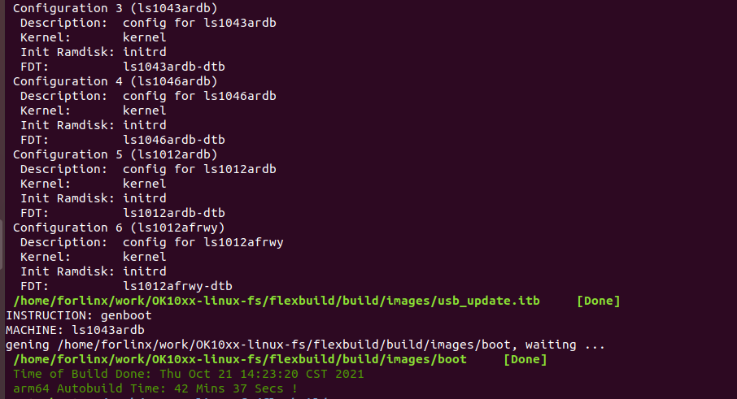
After successful compilation, the generated file is located in the build/images directory. View the generated image file:

Note: The first time you use the tree command, you need to install it. The installation command is sudo apt-get install tree.
4.2.3 Compiling Firmware Separately
LS series of chips require loading some firmware during startup, such as RCW (Reset Control Word), ppa.itb(optee os), uboot, etc. If you have made any changes to these files during development, then you need to recompile and package these files into a firmware image file and burn it to the boot device. The command to compile the firmware is:
Clear previously compiled files:
root@ubuntu:~/work/OK10xx-linux-fs/flexbuild# flex-builder -i clean-firmware
Compile all the Firmware:
root@ubuntu:~/work/OK10xx-linux-fs/flexbuild# flex-builder -c firmware -a arm64 -m ls1046ardb -b qspi -S 1133 //Compiling firmware for QSPI Nor Flash startup
root@ubuntu:~/work/OK10xx-linux-fs/flexbuild# flex-builder -c firmware -a arm64 -m ls1046ardb -b sd -S 1133 //Compile firmware for SD startup
Generate a firmware image of the QSPI Nor Flash boot:
root@ubuntu:~/work/OK10xx-linux-fs/flexbuild# flex-builder -i mkfw -a arm64 -m ls1046ardb -b qspi -S 1133
Compile successfully as follows:
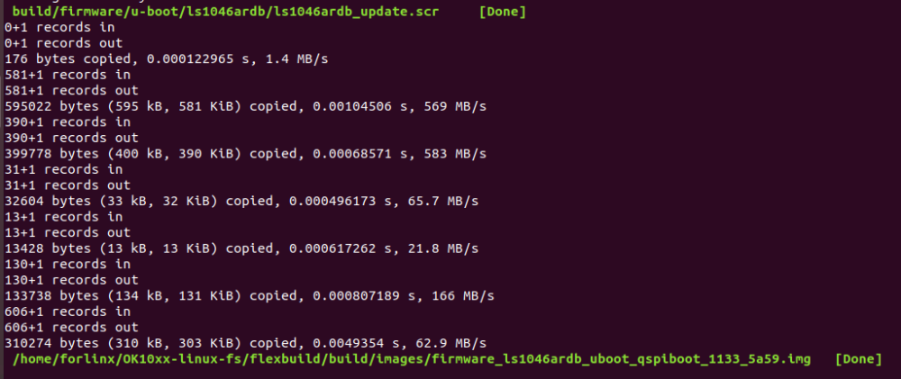
Generate sd boot firmware image:
root@ubuntu:~/work/OK10xx-linux-fs/flexbuild# flex-builder -i mkfw -a arm64 -m ls1046ardb -b sd -S 1133
Some information about the successful compilation is as follows:

4.2.4 Compiling Kernel and Modules Separately
Clear previously-compiled files:
root@ubuntu:~/work/OK10xx-linux-fs/flexbuild# flex-builder -i clean-linux
To configure the kernel (which can be skipped if using the default configuration), open the menuconfig command:
root@ubuntu:~/work/OK10xx-linux-fs/flexbuild# flex-builder -c linux:custom -m ls1046ardb -a arm64

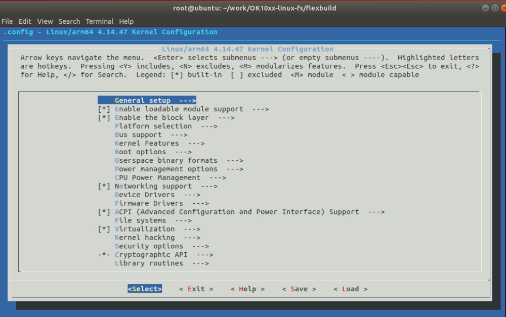
Save the exit print information after the setting is completed, as shown below:
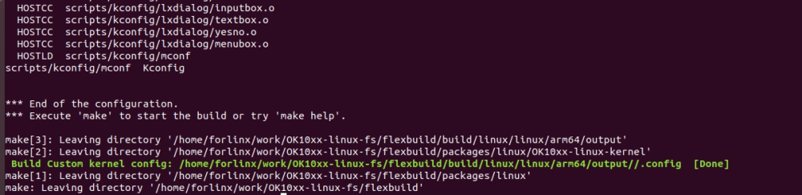
The generated configuration file is: build/linux/linux/arm64/output/.config
You can overwrite a changed file:packages/linux/linux/arch/arm64/configs/ls1046_defconfig
Compile the kernel commands separately:
root@ubuntu:~/work/OK10xx-linux-fs/flexbuild# flex-builder -c linux -a arm64 -m ls1046ardb
The print information of the successful compilation is as follows:
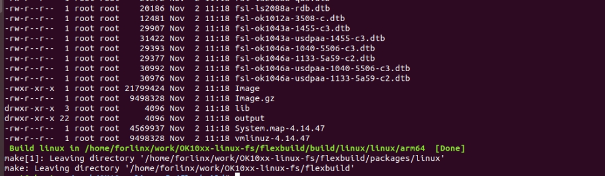
Compile the cryptodev driver separately:
root@ubuntu:~/work/OK10xx-linux-fs/flexbuild# flex-builder -c cryptodev-linux -a arm64 -m ls1046ardb
The print information of the successful compilation is as follows:
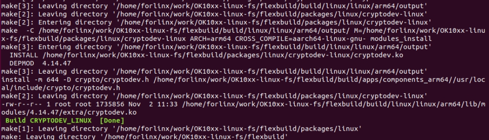
Automatically update the drive module to the file system:
root@ubuntu:~/work/OK10xx-linux-fs/flexbuild# flex-builder -i merge-component -a arm64 -m ls1046ardb
The print information of the successful compilation is as follows:
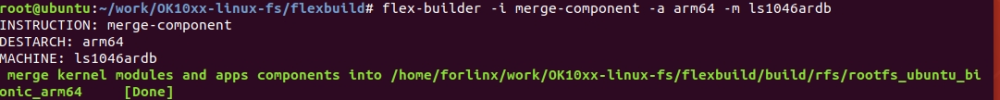
Re-generate the Ubuntu image:
root@ubuntu:~/work/OK10xx-linux-fs/flexbuild# flex-builder -i compressrfs -m ls1046ardb
The print information of the successful compilation is as follows:
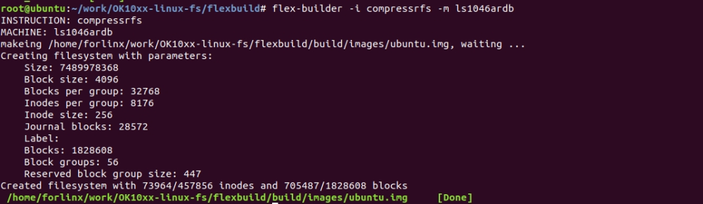
Update the compiled kernel and device tree files to the build/images directory:
root@ubuntu:~/work/OK10xx-linux-fs/flexbuild# flex-builder -i genboot -m ls1046ardb
The print information of the successful compilation is as follows:
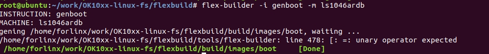
4.2.5 Compiling the App Program Separately
In the build/rfs/rootfs_ubuntu_bionic_arm64 directory, the OK1046A-C2 platform has already included the upper application layer tools such as OpenSSL by default, in general, users do not need to recompile, if you change the source code of this part, you need to use the following commands to compile it separately:
The compilation command is as follows:
root@ubuntu:~/work/OK10xx-linux-fs/flexbuild# flex-builder -c apps -m ls1046ardb
Note: If you have compiled apps before, execute flex-builder -i clean-apps, otherwise the compilation will report an error.
The print information of the successful compilation part is as follows:

Update the app to the file system:
root@ubuntu:~/work/OK10xx-linux-fs/flexbuild# flex-builder -i merge-component -a arm64 -m ls1046ardb
The print information of the successful compilation is as follows:

Re-generate the Ubuntu image:
root@ubuntu:~/work/OK10xx-linux-fs/flexbuild# flex-builder -i compressrfs -m ls1046ardb
The print information is as follows:
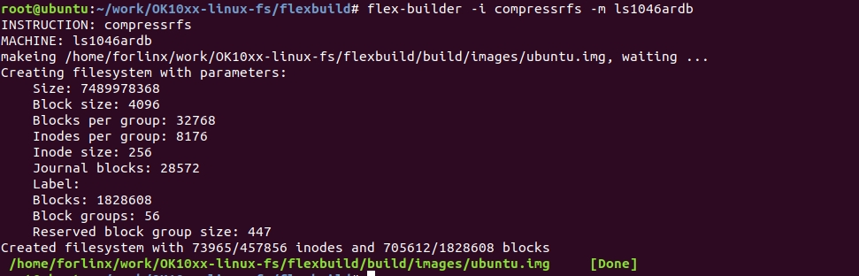
4.2.6 Compilation and Operation of Application Program
This section uses the UART test program source code as an example to copy the uarttest. C source code program to the/home/forlinx/work directory.
forlinx@ubuntu:~$ cd work/OK10xx-linux-fs/flexbuild/packages/apps/forlinx/uarttest/
forlinx@ubuntu:~ /forlinx/uarttest$ cp uarttest.c /home/forlinx/work
Use the cd command to enter the/home/forlinx/work directory;
forlinx@ubuntu:~ $ cd /home/forlinx/work/
forlinx@ubuntu:~/work$ ls
OK10xx-linux-fs OK10xx-linux-fs.tar.bz2 uarttest.c
2. Use aarch64-linux-gun-gcc to cross-compile. The environment variables have been set in the default environment and can be used directly;
forlinx@ubuntu:~/work$ aarch64-linux-gnu-gcc uarttest.c -o uarttest
After successful compilation, use the file command to view the generated file information.
forlinx@ubuntu:~/work$file uarttest
uarttest: ELF 64-bit LSB shared object, ARM aarch64, version 1 (SYSV),
dynamically linked, interpreter /lib/ld-linux-aarch64.so.1, for GNU/Linux 3.7.0,
BuildID[sha1]=dad62c46c28894445d8b6829fb74e6e428d4a478, not stripped
3. Copy the uarttest generated by compiling to the board through the U disk, such as/home/forlinx path, and run the test;
Use the cd command to go to the/home/forlinx path on the board.
root@localhost:~#cd /home/forlinx
Copy the uarttest program generated by compiling from the U disk mounting path to the current path.
root@localhost:/home/forlinx# cp /run/media/sda1/uarttest ./
Give the program executable permission and run it
root@localhost:/home/forlinx# chmod 777 uarttest //Set executable permissions for the program
root@localhost:/home/forlinx# ./uarttest -d /dev/ttyS1 //Run the program
4. Refer to the chapter “UART Test” in the software user manual for test.